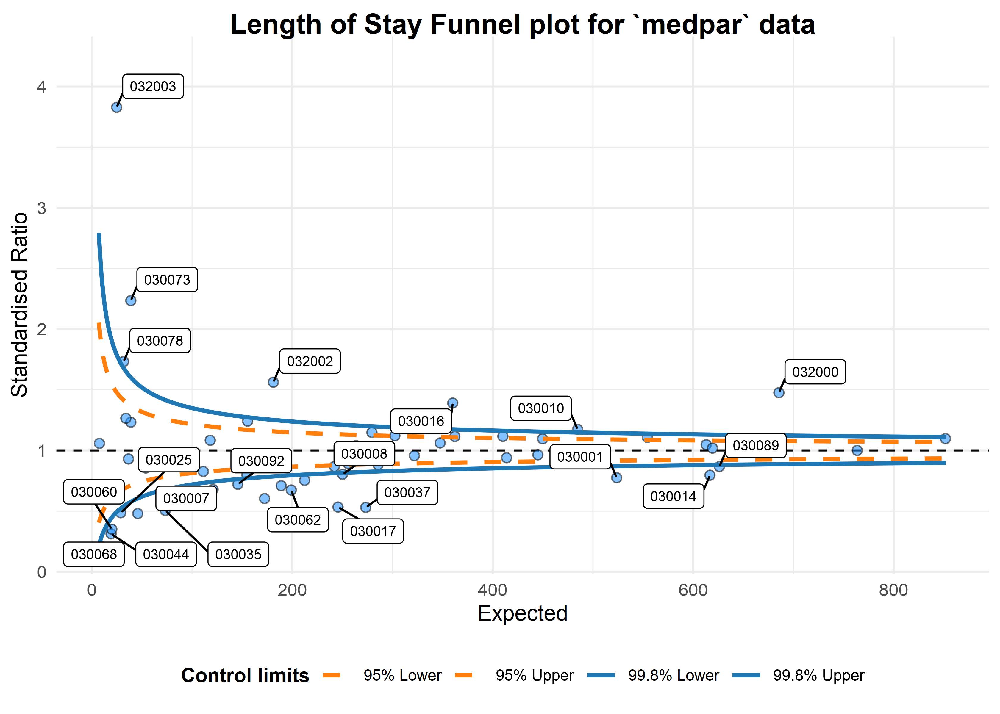
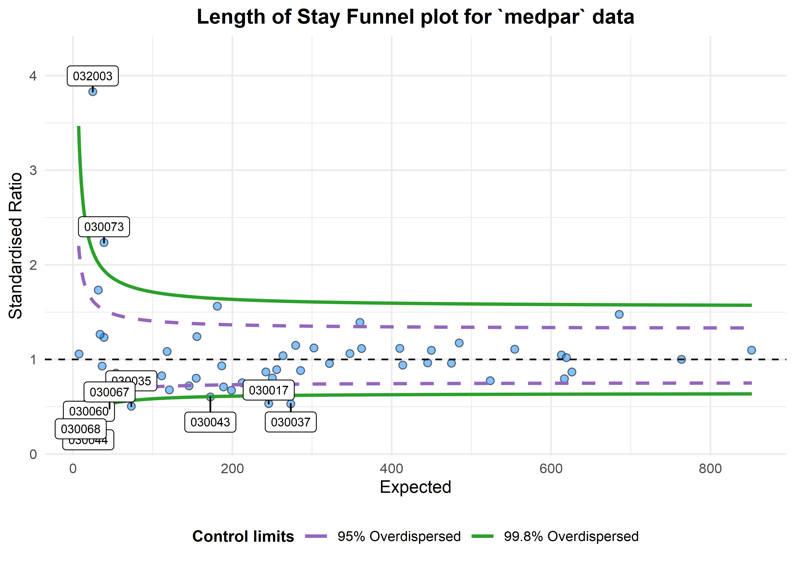

Funnel Plots
This package is the newer version of the older CMFunnels package. Development work will focus on this package from now on.
This is an implementation of the funnel plot processes, and overdispersion methods described in:
Statistical methods for healthcare regulation: rating, screening and surveillance. Spiegelhalter et al (2012)
Funnel plots for comparing institutional performance. Spiegelhalter (2005)
Handling over-dispersion of performance indicators. Spiegelhalter (2005)
It draws funnel plots using ggplot2 and allows users to specify whether they want to adjust the funnel plot limits for ‘overdispersion.’ This adjustment makes the assumption that we are dealing with clusters of values (means) at institutions that are themselves arranged around a global mean. We then have ‘within’ institution variation and ‘between institution’ variation. The process assessed the expected variance in our data, and where it is greater than that expected by the Poisson distribution, uses the difference as a scaling factor. It is then used in an additive fashion, after an adjustment for outliers by either Winsorised or truncated (with a default 10% at each end of the distribution.)
Methods are based on those presented in Spiegelhalter’s papers and the Care Quality Commission’s Intelligent Monitoring methodology documents, with methods for proportions, ratios of counts and indirectly standardised ratios. There is a also a variant method for standardised ratios, used in the NHS’ Summary Hospital Mortality Indicator’
Summary Hospital-level Mortality Indicator, NHS Digital, SHMI specification
This variant uses a log-transformation and truncation of the distribution for calculating overdispersion, whereas Spiegelhalter’s methods use a square-root and Winsorisation.
Contributions are welcome. Please note that the ‘FunnelPlotR’ project is released with a Contributor Code of Conduct. By contributing to this project, you agree to abide by its terms.
More information available at https://nhs-r-community.github.io/FunnelPlotR/
Installation
You can install from CRAN:
install.packages("FunnelPlotR")You can install the development version directly from GitHub using the remotes (or devtools) package. Please be aware that, although I endeavour have help files up-to-date, this version may different from the one on CRAN. Please consult the help documentation if you get error messages.
remotes::install_github("https://github.com/nhs-r-community/FunnelPlotR")Summary of Use
We will load the medpar dataset from Hilbe’s COUNT package. This is based on 1991 Medicare files for the state of Arizona (Hilbe, Joseph M (2014), Modeling Count Data, Cambridge University Press). We will first load the data and build a simple predictive model using a Poisson GLM.
library(FunnelPlotR)
library(COUNT)
library(ggplot2)
# lets use the 'medpar' dataset from the 'COUNT' package. Little reformatting needed
data(medpar)
medpar$provnum<-factor(medpar$provnum)
medpar$los<-as.numeric(medpar$los)
mod<- glm(los ~ hmo + died + age80 + factor(type), family="poisson", data=medpar)
summary(mod)
#>
#> Call:
#> glm(formula = los ~ hmo + died + age80 + factor(type), family = "poisson",
#> data = medpar)
#>
#> Deviance Residuals:
#> Min 1Q Median 3Q Max
#> -5.7309 -1.9554 -0.5529 0.9717 14.5487
#>
#> Coefficients:
#> Estimate Std. Error z value Pr(>|z|)
#> (Intercept) 2.26875 0.01246 182.011 < 2e-16 ***
#> hmo -0.07637 0.02393 -3.192 0.00142 **
#> died -0.24574 0.01826 -13.458 < 2e-16 ***
#> age80 -0.02141 0.02050 -1.045 0.29617
#> factor(type)2 0.24921 0.02099 11.871 < 2e-16 ***
#> factor(type)3 0.74869 0.02627 28.496 < 2e-16 ***
#> ---
#> Signif. codes: 0 '***' 0.001 '**' 0.01 '*' 0.05 '.' 0.1 ' ' 1
#>
#> (Dispersion parameter for poisson family taken to be 1)
#>
#> Null deviance: 8901.1 on 1494 degrees of freedom
#> Residual deviance: 7977.7 on 1489 degrees of freedom
#> AIC: 13705
#>
#> Number of Fisher Scoring iterations: 5Now we have a regression that we can use to get a predicted los that we will compare to observed los:
medpar$prds<- predict(mod, type="response")
We can build a funnel plot object with standard Poisson limits, and outliers labelled.
a<-funnel_plot(numerator=medpar$los, denominator=medpar$prds, group = medpar$provnum,
title = 'Length of Stay Funnel plot for `medpar` data', data_type="SR", limit=99,
draw_unadjusted = TRUE, draw_adjusted = FALSE, label="outlier")
print(a)
#> A funnel plot object with 54 points of which 25 are outliers.
#> Plot is not adjusted for overdispersion.That looks like too many outliers! There is more variation in our data than we would expect, and this is referred to as: overdispersion. So lets check for it:
The following ratio should be 1 if our data are conforming to Poisson distribution assumption (conditional mean = variance). If it is greater than 1, we have overdispersion:
sum(mod$weights * mod$residuals^2)/mod$df.residual
#> [1] 6.240519This suggest the variance is 6.24 times the condition mean, and definitely overdispersed. This is a huge topic, but applying overdispersed limits using either SHMI or Spiegelhalter methods adjust for this by inflating the limits:
b<-funnel_plot(numerator=medpar$los, denominator=medpar$prds, group = medpar$provnum, data_type = "SR",
title = 'Length of Stay Funnel plot for `medpar` data', draw_unadjusted = FALSE,
draw_adjusted = TRUE, sr_method = "SHMI", label="outlier", limit=99)
print(b)
#> A funnel plot object with 54 points of which 9 are outliers.
#> Plot is adjusted for overdispersion.
These methods can be used for any similar indicators, e.g. standardised mortality ratios, readmissions etc.
Please read the package documentation for more info, at: https://nhs-r-community.github.io/FunnelPlotR/
Funnel Plot HEX sticker/logo by Paul Chipperfield, check him out at: https://themightychip.com/